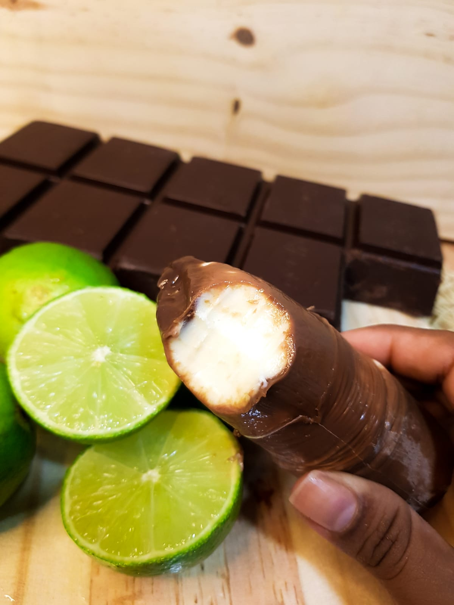
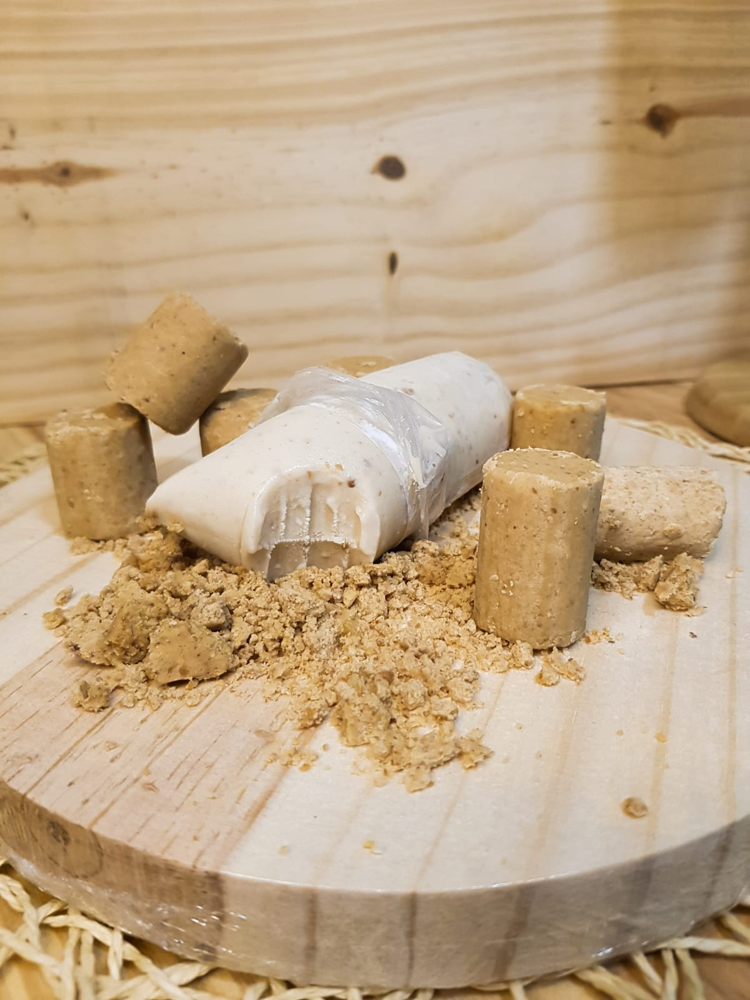
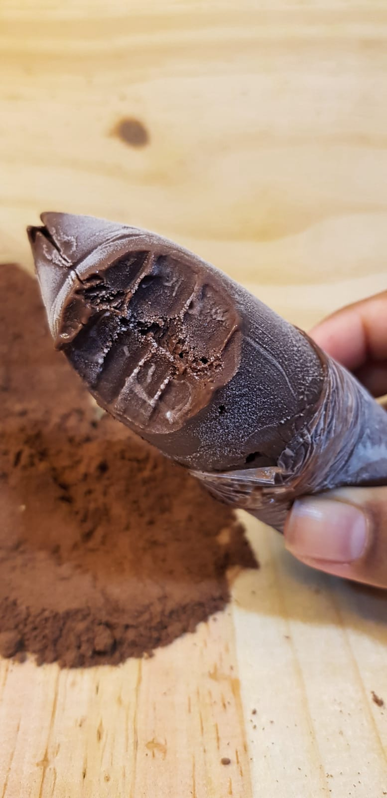
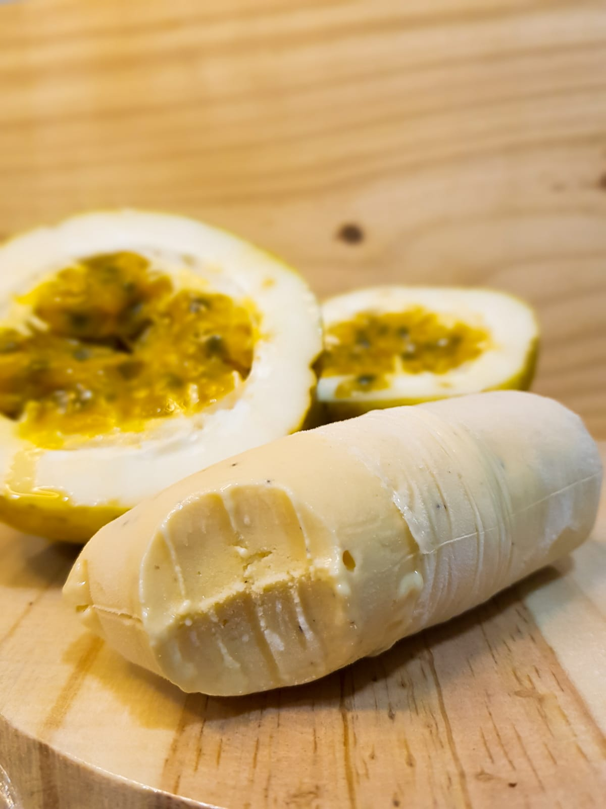
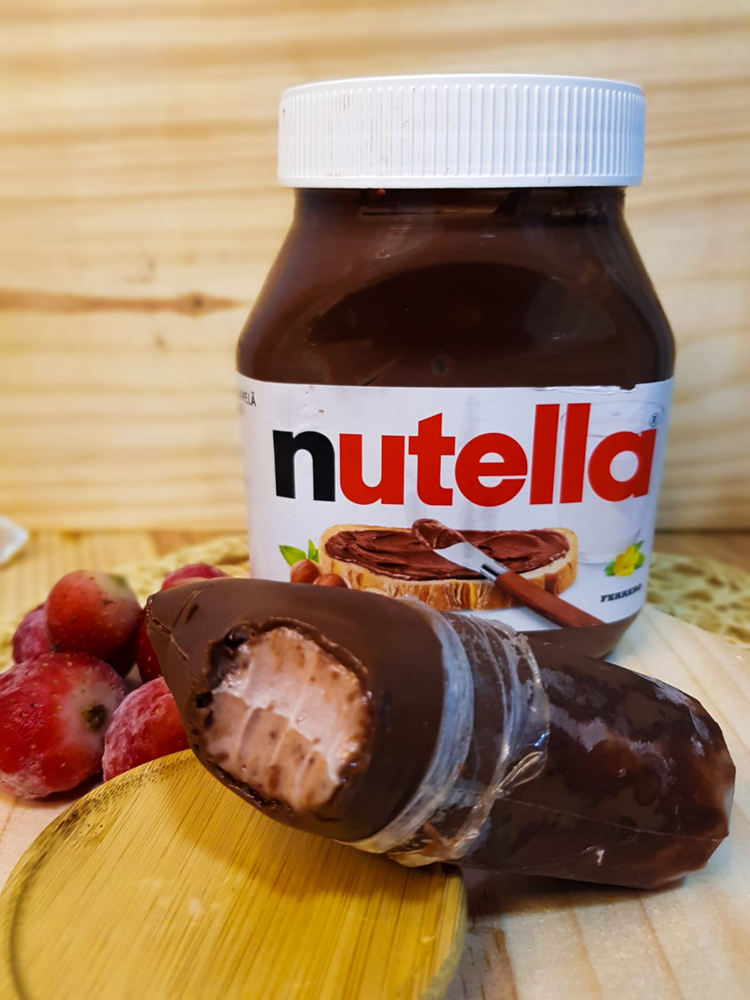

-
Limão com chocolate
-
Paçoca
-
Chocolate meio amargo
-
Mousse de maracujá
-
Morango com nutella
Oiiii meus amores!!! Me chamo Rita, tenho 29 anos e sempre gostei de empreender. Antes da Sra. Dindin, tinha uma loja de acessórios mas sempre tive vontade de trabalhar no ramo de gelato. Há um tempo atrás, ajudei uma amiga por um período amarrando e fazendo as receitas com ela de picolé gourmet e sempre a incentivei na época, era até com receitas do youtube e era muito bom, infelizmente ela não deu continuidade no projeto e paramos de produzir. Mas, depois disso sempre tive vontade de me especializar nessa área. Depois de anos vi um curso que me chamou atenção e acabei fazendo, mas ainda sentia que deveria me especializar mais e mais pra fazer algo diferente pra vocês.Foi ai então que fiz um outro curso, nesse novo curso aprendi a fazer bases cozidas e me apaixonei na cremosidade e no sabor inconfundível, um dindin com ZERO CRISTAIS DE GELO, era isso que faltava para dar o diferencial que eu tanto queria. A partir dai decidirmos colocar tudo em prática e finalmente tirar esse sonho do papel e assim nasceu a Sra. Dindin (inaugurada em 26 de junho de 2023). Sempre gostei de picolé gourmet, afinal quem não gosta né? desde então tem sido uma experiência incrivel e poder trabalhar com o que realmente amo não tem preço. Haaaa! E o melhor de tudo, tem sido muito gostoso ver os feedback de vocês por um trabalho que é feito com muito carinho, cuidado e amor. Continuem sempre aqui comigo, que esse sonho só tem sido possível graças a todos vocês. NÃO FAZEMOS PICOLÉ, FAZEMOS SOBREMESA NO SAQUINHO! COM AMOR, SRA.DINDIN.